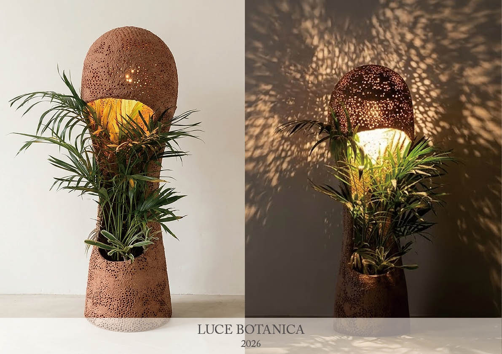
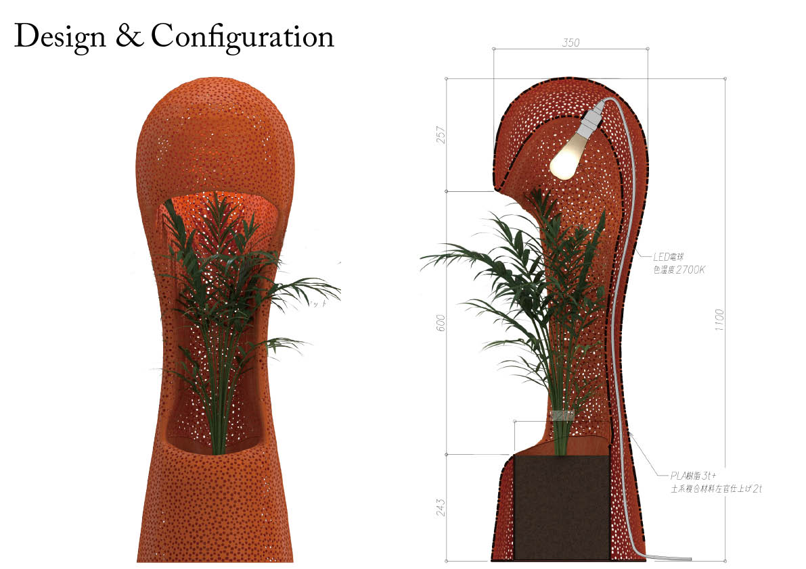
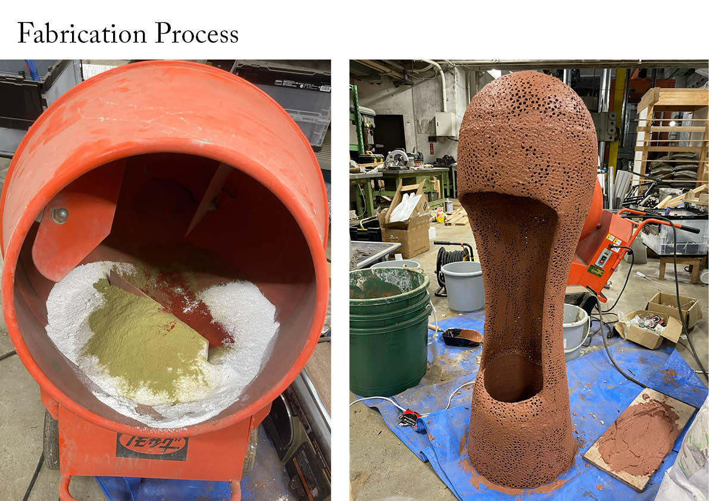
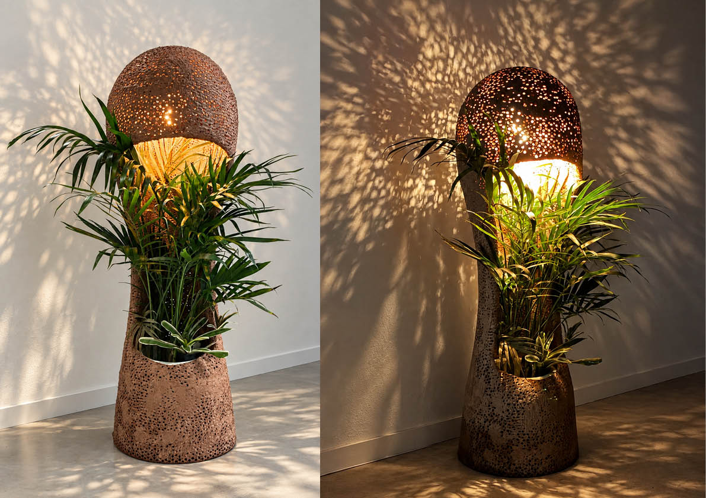
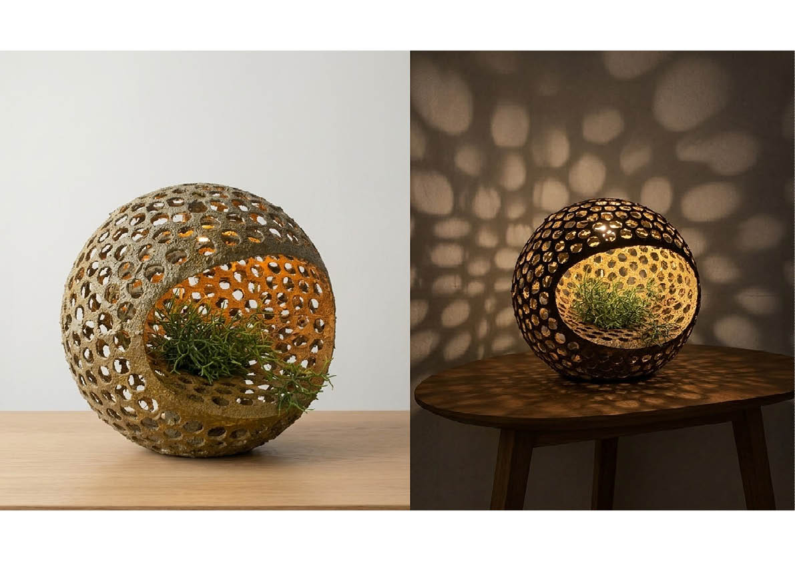
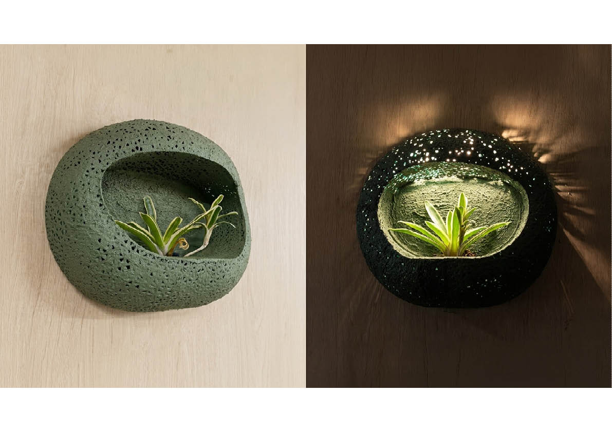

本作品は、植物を内部に配置し、人と植物の両方に光を届ける照明である。3Dプリントによって製作した多孔質な下地に、ハーブ系の香りを持つ素材を混ぜた土を塗り込み、マグネシウム系の固化材によって硬化させている。土を手作業で塗り込むことで、下地の孔には土で埋まる部分と開いたまま残る部分が生まれ、一つひとつ異なる表面が形成される。内部の光を灯すと、土に覆われずに残った無数の孔から光が漏れ、周囲の壁や床に不規則な光と影をつくる。人は、土の色や凹凸を見て触れ、土に混ぜた素材の香りを嗅ぎ、孔から漏れる光と影の変化を楽しむことができる。同時に、内部の光は照明の中に配置した植物にも届く。また、多孔質な表面に残された孔によって、植物の周囲と外部との間に空気が通る。土を塗った多孔質な外殻の中に植物と光源を配置することで、植物を照らす光と、人の周囲を照らす光を一つの照明の中でつくり出している。
project
LUCE BOTANICA
term
Jul. 2026 - Aug. 2026
type
Product
credit
Hiroki Awaji, Mitsuhiro Hattori